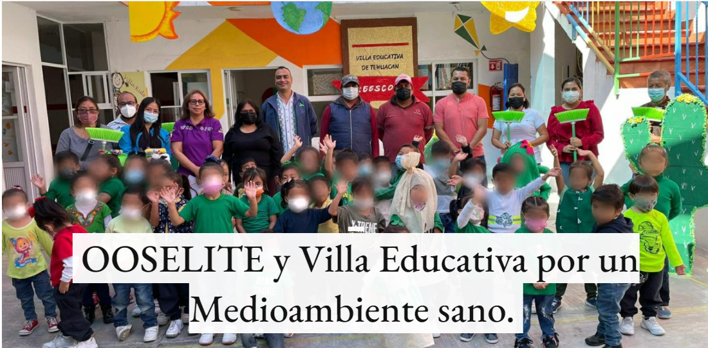
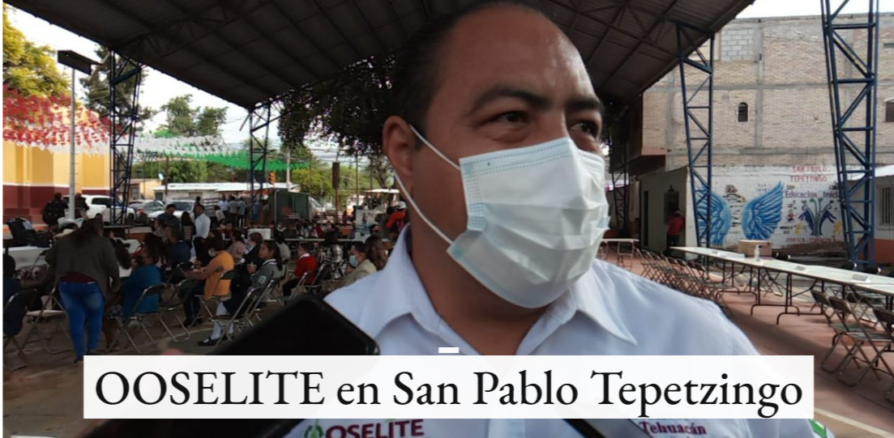

Ooselite
Pagina principal


Mision y vision
Ofrecer los servicios de recolección, traslado y disposición final de los residuos sólidos urbanos, modernizando la infraestructura del organismo, los procedimientos operativos, administrativos y de educación ambiental en residuos sólidos, la optimización de los recursos, con apego a la legislación ambiental.